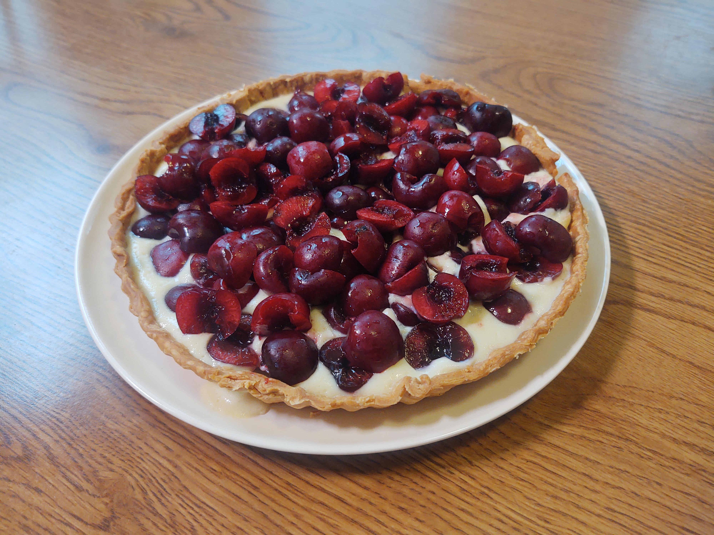

Mock Town Cherry Pie
Recipes

Description
Is it the worst thing you'll ever eat, or the best thing you'll ever put in your mouth?
We never once thought our strawhat rubber friend would dislike anything edible,
but this pie proved us wrong. The one to oppose him is of course the one and only Blaclbeard
AKA Marshall D. Teach. Will you side with the Sun God, or Darkness incarnate?
This recipe might just have you questioning Luffy's opinions, or perhaps reaffirm them
(Spoiler alert: you'll probably enjoy this).
This recipe makes 1, 21cm diameter pie
Ingredients
Dough
- 60g weak flour
- 60g strong flour
- 80g salted butter
- 10g milk
- 1/2 egg
- 15g granulated sugar
- flour (as needed)
Custard Cream
- 2 egg yolks
- 65g granulated sugar
- 10g corn starch
- 10g weak flour
- 230ml milk
- 2 tbsp. lemon juice
- 20g salted butter
- 18 American cherries
Steps
- First, we’ll make the dough.
Mix the flour together and sift.
Cut butter into 1cm blocks.
Chill both flour mixture and butter in the fridge. Mix milk, eggs, and sugar well, then chill in fridge.
- Add the butter to the bowl with the flour chop-mix with a pastry cutter (A).
Pour in 1’s egg mixture and mix together with a spatula.
Wrap in plastic wrap or parchment paper, and refrigerate 30 minutes to 1 hour.
- Remove dough from refrigerator. Place parchment paper on top of dough, and spread to proper size to fit in a pie pan with a rolling pin (B).
- Place the dough in the pie dish, making sure that it is tightly against the bottom and pressed into the corners.
Use a floured fork and press along the walls of the pie dish (C).
Any dough sticking out over the edge should be cut off.
Using a fork, open 10 holes in the bottom.
Cover with parchment paper and fill with weight stones (D).
- Preheat oven to 200°C. Cook 15 minutes. Remove stones, reduce heat to 180°C and cook an additional 15 minutes. Cool on a cake rack.
- In a pot, add egg yolk, sugar, cornstarch, weak flour, milk and mix.
Turn on stove. Mix until thickened (E). Remove from heat.
Add butter and lemon juice, and mix until smooth. After cooled, pour into pie dish.
- Remove cherry stems and cut cherries in half, remove seeds. Place on top of the custard cream and chill in the refrigerator.